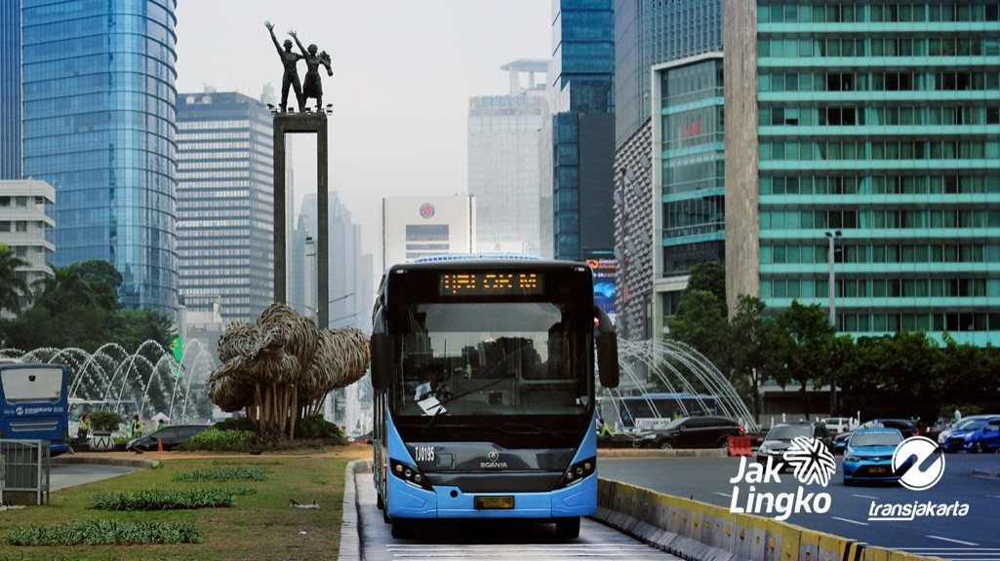

Tentang Trans Jakarta
Transjakarta adalah sebuah sistem transportasi Bus Rapid Transit (BRT) pertama di Asia Tenggara dan Selatan yang beroperasi sejak tahun 2004 di Jakarta, Indonesia. TransJakarta dirancang sebagai moda transportasi massal pendukung aktivitas ibukota yang sangat padat. Dengan jalur lintasan terpanjang di dunia (251.2 km), serta memiliki 260 halte yang tersebar dalam 13 koridor, Transjakarta yang awalnya beroperasi mulai Pkl. 05.00 – Pkl. 22.00 WIB, kini beroperasi 24 jam.